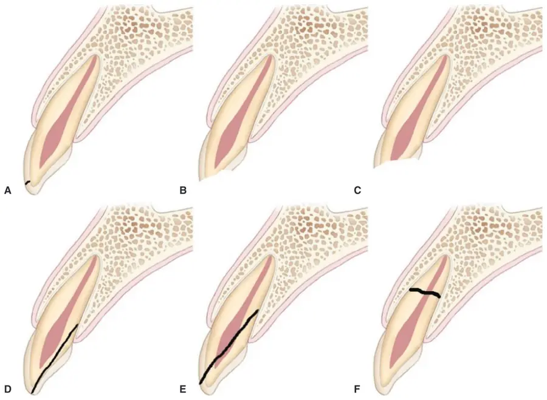
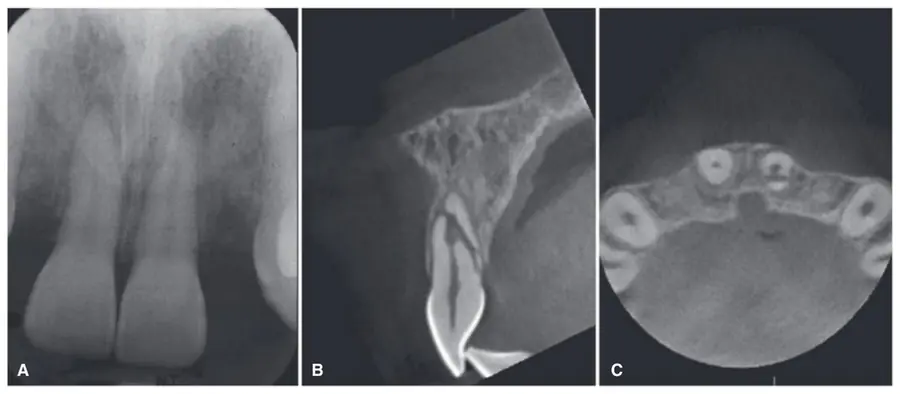

نسخه استخراجشده؛ ترجمه یا تأیید علمی انجام نشده است. وضعیت: captured
کل منطق تفسیر تروما از یک اصلاح واژگانی میآید: «شکستگیها اغلب بهاشتباه «خط» نامیده میشوند، با آنکه ماهیت سهبعدی دارند. شکستگیها صفحات شکاف در دندان یا استخواناند، و این صفحات میتوانند به عمق بافتها امتداد یابند.»

و پیامد مستقیمش، همان چیزی است که در بالین تو را نجات میدهد: «یک شکستگی ممکن است از دست برود اگر صفحهی شکستگی با جهت پرتو فرودی روی یک تصویر تخت واحد همراستا نباشد.» یعنی تصویر منفی، شکستگی را رد نمیکند.
و حالا چهار نشانهی عمومی رادیولوژیک شکستگی — اینها را در هر تصویر تروما بهطور نظاممند بررسی کن:
و نکتهی ظریف نشانهی چهارم را از دست نده: «ناحیهی مجاور این منطقهی رادیواوپک باید برای تغییر در کانتور آناتومیک طبیعی یا گسستگی مرز با دقت بررسی شود.» یعنی اوپسیته خودش نشانه نیست؛ راهنماست که کجا را نگاه کنی.
و ترتیب کار در بیمار ترومایی — که پیش از هر تصویری میآید: ارزیابی اولیه به سمت «برنامهی درمانی اولویتبندیشده بر پایهی حضور آسیبهای تهدیدکنندهی حیات» هدایت میشود، با معیارهایی چون مقیاس کمای گلاسکو، نمرهی بازنگریشدهی تروما، و نمرهی شدت آسیب. و تصمیم دربارهی آسیبهای فک و صورت «پس از تثبیت راه هوایی، تنفس و گردش خون» گرفته میشود.
و در تروماهای حاد، روش انتخابی MDCT است که میتواند مغز، استخوانهای صورت، قوسهای دنتوآلوئولار و ستون فقرات گردنی را در بر بگیرد، و با تصویربرداری هدفمند دنتوآلوئولار تکمیل شود.
و سه محدودیت واقعبینانهاش: وضعیت حرکتی بیمار (بیمار بیهوش یا غیرقابل حرکت را نمیتوان در دستگاهی که نشستن یا ایستادن میخواهد تصویربرداری کرد)، در دسترس بودن تجهیزات در آن مرکز، و اولویتهای درمانی که ترتیب انجام تصویربرداریها را تعیین میکنند.
طبقهبندی آندریاسن استاندارد جهانی توصیف آسیبهای دنتوآلوئولار است و آنها را به سه گروه تقسیم میکند:

و مهمترین قاعدهی عملی این درس — قاعدهی سه پریاپیکال: در کلینیک دندانپزشکی، «دستکم سه تصویر پریاپیکال باید گرفته شود: یکی با هندسهی استاندارد، و دو تصویر با زوایای افقی متفاوت پرتو، مزیال و دیستال به پروجکشن استاندارد.»
و چرا؟ چون شکستگی یک صفحه است. اگر پرتو با آن صفحه همراستا نباشد، شکستگی دیده نمیشود. سه زاویه، سه شانس. و معاینه میتواند شامل تصاویر پریاپیکال دندانهای قوس مقابل هم باشد.
و پنج نشانهی بالینی آسیب دنتوآلوئولار که باید بگردی: شکستگی دندان با یا بدون از دست رفتن ساختار، دندانهای لق، ساکتهای خالی از دندانهای آولسشده، جابهجایی دندان از جمله فرورفتن به داخل ساکت، و تغییر اکلوژن یا نقص پلهای در صفحهی اکلوزال.
و چهار هدف تصویربرداری: تعیین محل و گسترهی آسیب به بافتهای سخت دندانی و زائدهی آلوئولار، ارزیابی درگیری احتمالی پالپ، ارزیابی آسیب لیگامان پریودنتال، و ارزیابی اثر آسیب بر قابلیت ترمیم و نگهداری دندانهای درگیر.
و یک هشدار مهم دربارهی پروتکلهای تروما: «رزولوشن این پروتکلهای تصویربرداری اغلب برای کشف درگیری دندانها یا ساختارهای نگهدارندهشان ناکافی است.» یعنی MDCT تروما جای تصویر داخلدهانی را نمیگیرد.
و سه سناریوی جستوجوی قطعهی گمشده — که اغلب فراموش میشوند:
و یک ملاحظهی ویژه در کودکان: تصویربرداری پیش از درمان قطعی ضروری است، «بهویژه در بیماران کودک که در آنها دستکاری ریشهی یک دندان شیری آسیبدیده میتواند بهطور ناخواسته جوانهی دندان دائمی زیرین را آسیب بزند».
نوع سؤال: ساخت کلمه · 4 خانه
حروف منبع: D · M · C · T